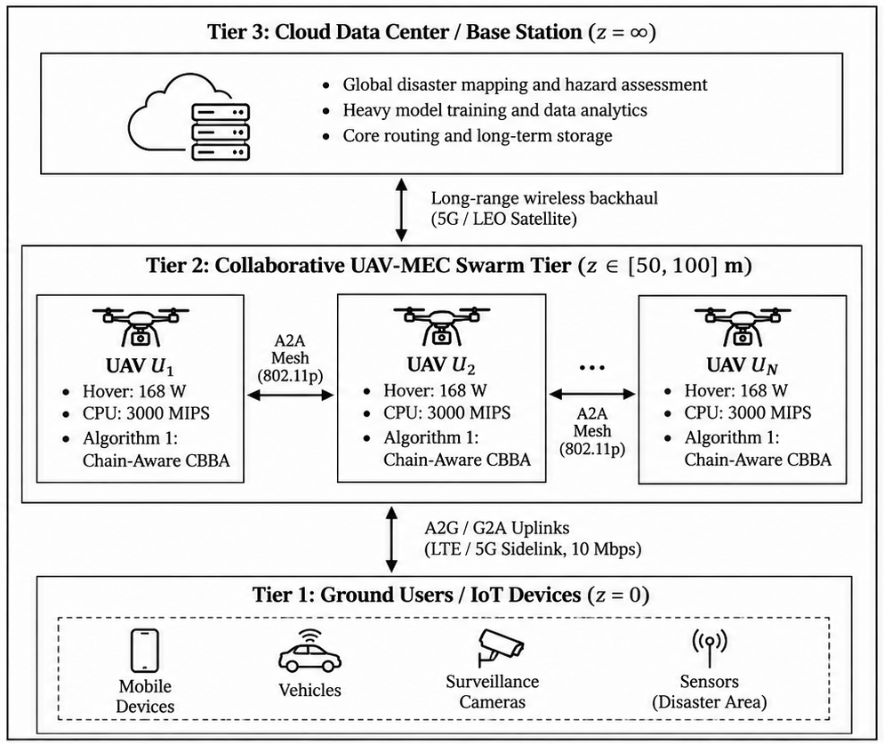

Resilient UAV Edge Computing for Disaster Response
A decentralized aerial edge computing framework executing Chain-Aware CBBA to eliminate task fragmentation, overcome aerodynamic hover barriers, and achieve sub-second mission-critical task turnaround above disaster zones.
Introduction and Operational Context
Examining why terrestrial computing fails in post-disaster scenarios and how autonomous rotary-wing UAV swarms bridge the communication and computing gap.
Large-scale natural disasters (seismic earthquakes, hurricanes, flash floods) routinely obliterate terrestrial telecommunication base stations, fiber-optic backhauls, and power grids within minutes. Ground Internet of Things (IoT) sensors, geophones, and wearable medical trackers cannot route data to distant cloud data centers.
Swarms of rotary-wing Unmanned Aerial Vehicles (UAVs) equipped with Multi-Access Edge Computing (MEC) servers provide a rapidly deployable aerial computing tier. Flying at altitudes between 50 m and 100 m, these vehicles ingest sensor data via high-capacity Air-to-Ground (A2G) links and coordinate over Air-to-Air (A2A) wireless mesh networks to execute emergency situational analytics directly above the disaster zone.
Project Objectives (M.Tech Semester 3)
Four targeted technical milestones achieved during Dissertation Phase 1.
Momentum Aerodynamics Modeling
Formulate rigorous actuator-disk momentum theory models capturing the exact propulsion power required to maintain steady hover (\(P_{\text{hover}} \approx 168.0\,\text{W}\)) vs. digital processing (\(10\text{--}15\,\text{W}\)).
Chain-Aware CBBA (Algorithm 1)
Design a decentralized auction protocol integrating an Atomic Chain Incentive Multiplier (\(\gamma = 1.5\)) for pipeline co-location and a Pre-Bid Energy Feasibility Guard (\(E_{\text{reserve}} = 20\,\text{kJ}\)).
Extended iFogSim2 Benchmarking
Extend the iFogSim2 simulator with 19 custom classes and execute comparative workload sweeps from 500 to 3,000 tasks against Greedy Offloading and Standard CBBA across 5 independent seeds.
Problem Statement: Aerodynamic Hover Barrier & Task Fragmentation
Understanding how independent auction mechanisms create catastrophic energy drains and chain dependency deadlocks in aerial networks.
The Task Fragmentation Dilemma
Emergency workloads naturally arrive as multi-stage Directed Acyclic Graph (DAG) pipelines:
Stage 1 (Framing) → Stage 2 (Filtering) → Stage 3 (Inference).
Standard auction protocols evaluate tasks independently. As a result, Stage 1 is awarded to UAV \(\mathcal{U}_1\) while Stage 2 is awarded to UAV \(\mathcal{U}_2\). The downstream UAV \(\mathcal{U}_2\) cannot begin execution until the intermediate data payload is transmitted over the Air-to-Air wireless link.
A \(0.533\,\text{s}\) Air-to-Air wireless transmission delay forces the downstream UAV to hover idly, burning \(89.6\,\text{J}\) of propulsion energy per pipeline. Over 100 fragmented pipelines, this wastes \(8.96\,\text{kJ}\) (\(\approx 4.5\%\) of total battery capacity) producing zero compute progress.

Application Horizons: Where UAV-MEC is Deployed
Rotary-wing aerial edge computing powers vital missions spanning humanitarian disaster relief, tactical defense operations, and smart precision agriculture.
 🚨 Disaster Response
🚨 Disaster Response
Earth Calamities & Urban Collapse
Following earthquakes and floods, UAVs process multi-spectral infrared imagery to detect body heat signatures of trapped victims beneath structural rubble and stream coordinate vectors to ground triage teams.
 🛡️ Tactical Defence
🛡️ Tactical Defence
Defence & Contested Airspaces
Autonomous swarms maintain Line-of-Sight tactical corridors in electronic-warfare environments where satellite uplinks are actively jammed, decentralized consensus auctions coordinate defensive border surveillance.
 🌱 Precision Agriculture
🌱 Precision Agriculture
Precision Agriculture & Forestry
UAV swarms ingest sensor telemetry from soil moisture probes and leaf sensors, executing real-time vegetation indexing (NDVI) and localized micro-pesticide spraying without relying on fixed telecom infrastructure.
Methodology: Chain-Aware CBBA (Algorithm 1)
Eliminating task fragmentation through atomic pipeline incentives and battery feasibility guards.
Two Integrated Safeguards
-
Pre-Bid Energy Feasibility Guard
Evaluates hover, compute, and communication energy before committing bids. If \(E_{\text{est}} > E_{\text{rem}} - E_{\text{reserve}}\) (\(E_{\text{reserve}} = 20\,\text{kJ}\)), the bid is clamped to 0, preventing depleted UAVs from accepting unfinishable tasks.
-
Atomic Chain Incentive Multiplier (\(\gamma = 1.5\))
When a UAV already holds the predecessor stage in its local bundle, its bid is boosted by 50% (\(c_{ij} = 1.5 \times c_{ij}^{\text{base}}\)). This enforces pipeline co-location, reducing A2A data transfer delay to zero (\(t_{\text{transfer}} = 0\)).
-
18-Rule Decentralized Consensus
Peers exchange bid vectors over 802.11p mesh, deterministically resolving conflicts in polynomial time (\(\mathcal{O}(N \cdot D_{\text{mesh}})\)) in under 100 ms.

Project Team and Supervision
Conducted at the Department of Computer Science and Engineering, Amrita School of Computing, Coimbatore.
Kanchi Karthik
Amrita School of Computing, Amrita Vishwa Vidyapeetham
Dr. Vishnuvarthan R
Amrita School of Computing, Amrita Vishwa Vidyapeetham
Dissertation Progress (Phase 1 vs. Phase 2)
Tracking achievements completed in Semester 3 and future extensions planned for Semester 4.
Phase 1: Analytical Modeling & System Architecture
August – September 2026 (Completed)Formulated three-tier UAV-MEC topology, Air-to-Ground probabilistic LoS/NLoS channel equations, Air-to-Air DSRC mesh latency, and rotary-wing momentum aerodynamics (\(P_{\text{hover}} \approx 168.0\,\text{W}\)).
Phase 1: Algorithm 1 Design & iFogSim2 Simulation
October – November 2026 (Completed)Implemented Chain-Aware CBBA with \(\gamma = 1.5\) and Pre-Bid Energy Feasibility Guard in extended iFogSim2. Executed comparative sweeps (500–3,000 tasks, 5 seeds) demonstrating 97.3% task completion, 95.2% chain success, and >90% consensus energy reduction.
Phase 2: Decentralized Runtime Stall Detection (Algorithm 2)
Semester 4 (Roadmap)Autonomous peer heartbeat monitoring (\(H_{\text{thresh}} = 2.0\,\text{s}\)) and internal queue divergence tracking (\(\Delta Q_{\text{thresh}} = 5\) tasks) to detect in-flight battery dropouts and communication link failures.
Phase 2: Virtual Handover & Dynamic Recovery (Algorithm 3)
Semester 4 (Roadmap)Decentralized 1-hop cooperative task migration to recover stalled pipeline stages without central coordinator intervention under severe wind disturbances.